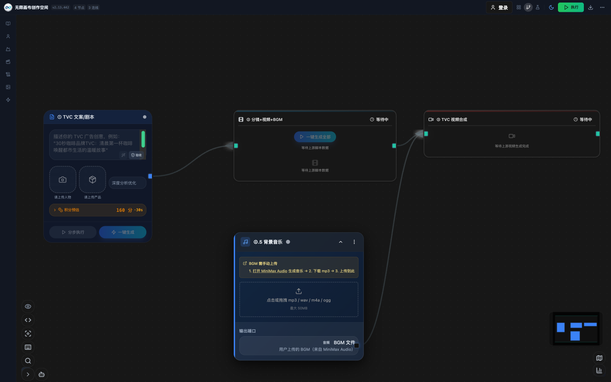
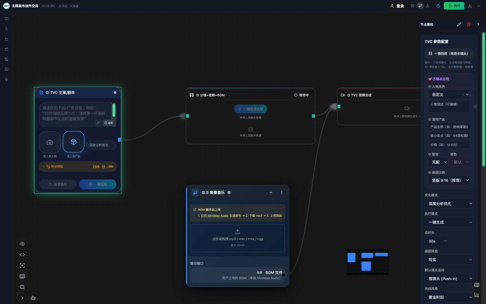
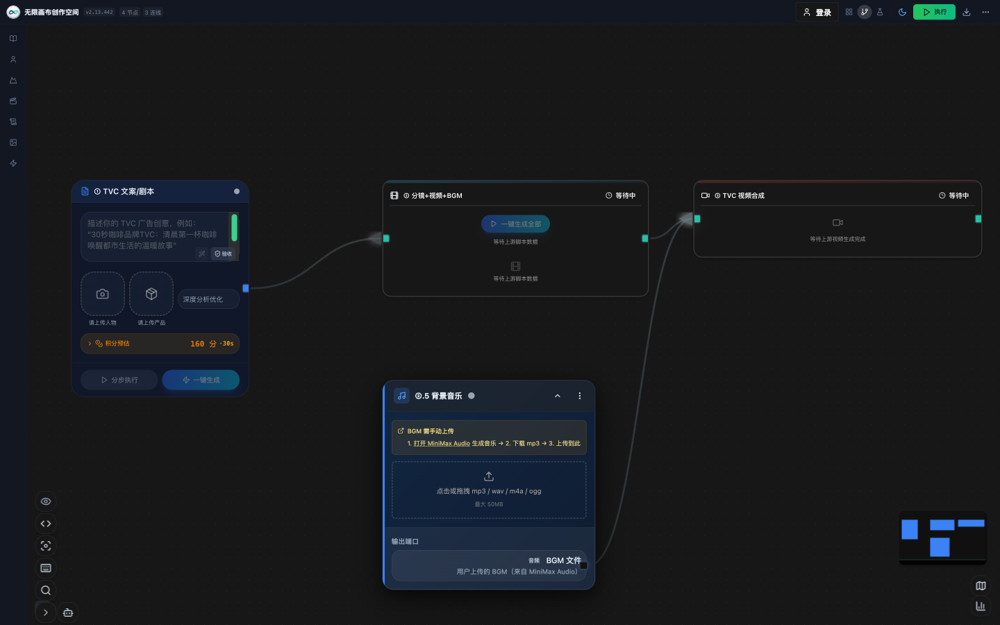
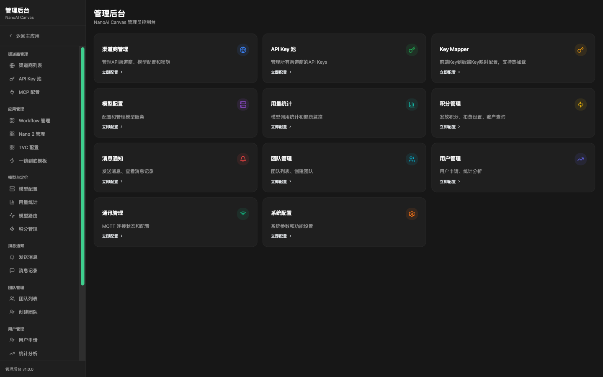

NanoAi无限画布 是一个基于无限画布的 AI 内容生产平台。以可视化节点工作流为核心，打通「创意文案 → 分镜设计 → 图像生成 → 视频生成 → 配乐合成 → 成片输出」全链路，让创作者在一个画布内完成过去需要多款工具反复衔接的全部工作。
与 ComfyUI 等节点式创作工具相比，NanoAi无限画布 的核心差异在于：端到端一站式。ComfyUI 擅长单点图像生成的精细化编排，但文案、分镜、视频、配乐、成片仍需借助外部工具手工衔接；NanoAi无限画布 将完整内容生产管线内化为平台能力，节点之间数据自动流转，一键即可从一句话创意直达成片。
| 能力域 | 功能 | 说明 |
|---|---|---|
| 创意输入 | 文案 / 剧本生成 | DeepSeek-V4-Pro 驱动，结构化剧本输出，含分镜脚本与配音时间轴 |
| 视觉设计 | 角色 / 场景设计 | AI 角色三视图、场景概念图，支持参考图一致性控制 |
| 视频生产 | 图生视频 / 文生视频 | 多模型视频生成，支持首尾帧锚定、口型同步 |
| 音频生产 | BGM 生成 / 配音 | 国风到影视级配乐；MiniMax 音色设计与 TTS 模型，多音色自然语音 |
| 后期合成 | 视频合成引擎 | 转场、字幕、混音、多规格输出 |
| 质量控制 | AI 视觉验收 | 生成结果自动一致性评分，不达标自动重试 |
| 协作运营 | 团队 / 积分 / 资产库 | 团队积分优先、资产版本管理、全链路审计 |




| 维度 | NanoAi无限画布 | ComfyUI 类节点工具 |
|---|---|---|
| 生产管线 | 文案到成片端到端闭环 | 聚焦单点图像生成编排 |
| 算力形态 | NanoAi Node 分布式算力池（Go 单二进制节点，跨平台零依赖部署） | 本地单机算力，受限于本机硬件 |
| 任务调度 | 错峰自动调度（白天下单 / 夜间执行 / 早上审稿） | 手动触发，无队列调度 |
| 视频能力 | 内置图生视频 / 文生视频 / 口型同步 | 需外挂第三方视频工具 |
| 音频能力 | 内置 BGM 生成与配音 TTS | 不支持，需外部工具 |
| 模型接入 | DeepSeek-V4-Pro 剧本 / 生图 / 视频 / MiniMax 音色 TTS 全模型栈 | 依赖本地模型与手动装插件 |
| 使用门槛 | 模板化开箱即用，业务人员可上手 | 面向算法工程师，门槛高 |
| 协作运营 | 团队 / 积分 / 资产库 / 审计完备 | 单机为主，协作能力弱 |
| 部署形态 | 云端服务，浏览器即用 | 本地部署，依赖硬件配置 |
平台采用前后端分离架构：前端基于 React 与无限画布引擎实现可视化编排；后端以高性能异步框架承载工作流执行引擎、任务队列与多 AI 服务路由；NanoAi Node 是带算力的分布式任务执行节点，组成云端算力池，平台自动完成算力分配与任务调度。
| 模块 | 职责 |
|---|---|
| 工作流引擎 | 异步多步编排、断点续传、实时进度推送 |
| 多模型路由 | DeepSeek-V4-Pro 剧本 / 生图 / 视频 / MiniMax 音色 TTS 模型统一接入与调度 |
| Agent 子系统 | 多角色 AI 协作生产，具备记忆沉淀与自优化能力 |
| 质量闸 | AI 视觉验收与一致性评分，低分自动重试 |
| 运营体系 | 积分计价、团队协作、资产库、全链路审计 |
NanoAi无限画布 把「AI 内容生产」从多个离散工具的手工拼接，升级为一个画布内的自动化流水线。对于需要持续产出视频内容的团队，它意味着更短的交付周期、更低的多工具协作成本，以及可运营、可审计的生产过程。